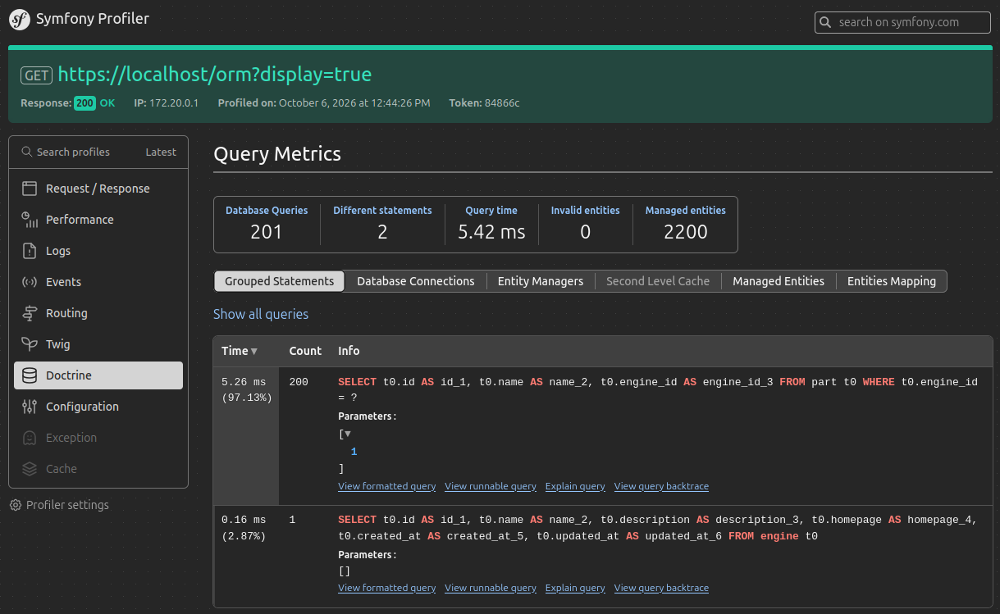
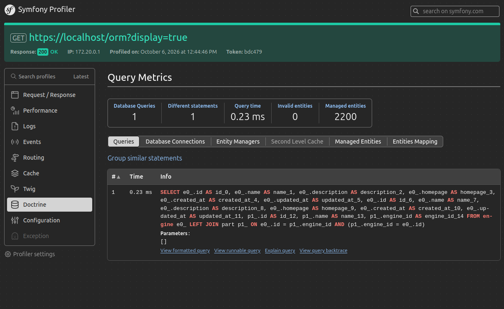

ORM: Puissance, pièges et bonnes pratiques…
…pour une couche données maîtrisée
 Stéphane Hulard - Forum PHP
Stéphane Hulard - Forum PHP

Stéphane Hulard
🤓 Directeur Technique (CH Studio, Ex Makina)
🤝 Contributeur
C'est quoi un ORM ?
ORM: Object-Relational Mapping
[…] converting data between a relational database and the memory (usually the heap) of an object-oriented programming language.
This creates, in effect, a virtual object database that can be used from within the program.
Une façon de représenter les données
Tables → classes d'entités
Lignes → instances
Colonnes → propriétés
Clés étrangères → associations (relations)
Deux grandes familles
Active Record: Laravel Eloquent, Propel, Cycle ORM
Persistance dans l'entité, couplage fort entité 🔄 DB
$model = User::find(1);
$model->name = 'New name';
$model->save();
Deux grandes familles
Data Mapper: Doctrine ORM, Atlas, …
Persistance séparée (EntityManager), couplage faible (entité 🟰 objet métier)
$model = $repository->getUser(1);
$model->name = 'New name';
$manager->persist($model);
$manager->flush();
Les promesses des ORMs ?
→ Portabilité : abstraction du SQL (DBAL)
→ Outillage : migrations, validation du modèle…
→ Productivité : moins de code, moins de SQL répétitif
→ Sécurité : requêtes paramétrées, échappement
→ Modèle objet : relations navigables, héritage
→ Maintenabilité : les objets comme référence pour l'équipe
Changer de DBAL ?
Heu… Qui a déjà fait ça ?
🔧 Fiabiliser par l'outillage
Génération de migration, validation du schéma, …
bin/console doctrine:migrations:diff
bin/console doctrine:migrations:migrate
bin/console doctrine:schema:validate… une automatisation bienvenue !
🏃♀️➡️ Productivité, sécurité et maintenance
Aide à forcer les règles par l'abstraction…
…Repository, QueryBuilder, EventListener…
… mais attention aux pièges de l'outil.
Les pièges des ORMs
🪤 Piège n°1 : le problème N+1
$articles = $repo->findAll();
foreach ($articles as $article) {
echo $article->getAuthor()->getName();
}$articles = $repo->findAll(); // 1 requête
foreach ($articles as $article) {
echo $article->getAuthor()->getName();
}$articles = $repo->findAll();
foreach ($articles as $article) {
echo $article->getAuthor()->getName();
} // +1 requête par article💥 100 articles → 1 + 100 = 101 requêtes
Le lazy loading charge la relation author seulement à l'accès.
💡 Résoudre le N+1
Doctrine (DQL fetch join)
class ArticleRepository {
public function getAll() {
return $this->createQueryBuilder('ar')
->addSelect('ar, au')
->leftJoin('ar.author', 'au')
->getQuery()
->getResult();
}
}Doctrine (DQL fetch join)
class ArticleRepository {
public function getAll() {
return $this->createQueryBuilder('ar')
->addSelect('ar, au')
->leftJoin('ar.author', 'au')
->getQuery()
->getResult();
}
}⚠️ Interdit l'utilisation de Query::toIterable()
💡 Résoudre le N+1
Doctrine (DQL fetch join)
$q = $em->createQuery(<<<DQL
SELECT a, au
FROM Article a
JOIN a.author au
DQL);💡 Résoudre le N+1
Doctrine (Eager loading)
class Article {
#[ManyToOne(
targetEntity: Author::class,
fetch: 'EAGER'
)]
private Author $author;
}⚠️ Uniquement pour les relations toujours nécessaires!
💡 Résoudre le N+1
Eloquent (Model::with())
$articles = Article::all();Eloquent (Model::with())
$articles = Article::with('author')->get();💡 Comment éviter le N+1 ?
À quoi va servir cette requête ?
Dans quel contexte ?
⏱️ Mesurer: Symfony Profiler, Laravel Debugbar…


🪤 Piège n°2 : le coût d'hydration
Convertir des lignes en objets…
→ Coût en O(N) (nombre de champs mappés)
→ Devient très coûteux au-delà de 2 LEFT JOIN (fetch joins)
→ L'ORM détecte et ignore les parties répétées des lignes
« The process of hydration becomes extremely expensive when more than 2 LEFT JOIN operations are part of our queries. »
🤔 Fetch join : le faux ami
SELECT c, e FROM CompanyEntity c
JOIN company.employees e⚠️ Beaucoup de répétition dans les résultats.
⚠️ Réduire le nombre de requête n'est pas le seul objectif
Tideways — 5 Doctrine Performance Traps
(B. Eberlei, core contributor Doctrine)
🪤 Piège n°3 : le syndrome SELECT *
On a besoin de 2 colonnes, on charge 25 entités complètes
$users = $repository->findAll();
foreach ($users as $u) {
echo $u->getEmail();
}⚠️ L'ORM hydrate des objets entiers pour quelques champs!
💡 Limiter le SELECT *
Ne récupérer que le nécessaire…… les DTOs!
$q = $em->createQuery(<<<DQL
SELECT NEW App\DTO\UserView(u.id, u.email)
FROM App\Entity\User u
DQL);🤔 La couche lecture a des besoins différents de l'écriture
💡 Limiter les effets de bords
👍 Maîtriser la cardinalité des relations déclarées…
…trop de to-many ? Hydration coûteuse !
🤝 Préférer des relations unidirectionnelles…
…si les deux sens ne sont pas utiles !
🧓 Éviter l'héritage quand la table devient trop grande
Concevez vos modèles pour les requêtes, pas seulement pour
« représenter le domaine », validez par la mesure !
💡 Penser au cache !
Dépend de l'ORM utilisé…… avec Doctrine:
→ Cache de metadata et de parsing DQL (indispensable en production)
→ Second Level Cache (cache d'entités par identifiant entre requêtes)
→ READ_ONLY (par défaut, sûr), NONSTRICT_READ_WRITE, READ_WRITE
→ Réduit drastiquement les appels à la BDD
🎉 activé par défaut dans Symfony
💡 Centraliser la logique
Le comportement vit dans l'entité, pas dans les contrôleurs
Un seul endroit pour le métier → maintenance facilitée
La persistance reste un détail d'implémentation (Data Mapper)
Vos Repository sont vos amis
ORM + SQL natif le meilleur des deux mondes ?
🦸 Quand s'échapper de l'ORM ?
→ Requêtes de reporting (CTE, GROUP BY, fenêtres)
→ Requêtes très performantes où l'hydration coûte
→ Insertions / updates en masse
→ Cas où le SQL offre une fonctionnalité sans équivalent ORM
⚠️ Attention au mix des approches…
🦾 SQL natif dans l'ORM ?
$rsm = new ResultSetMappingBuilder($em);
$rsm->addRootEntityFromClassMetadata(
User::class, 'u'
);
$sql = <<<SQL
SELECT u.* FROM users u
WHERE u.last_login > '2026-10-08'
SQL;
$users = $em
->createNativeQuery($sql, $rsm)
->getResult();$rsm = new ResultSetMappingBuilder($em);
$rsm->addRootEntityFromClassMetadata(
User::class, 'u'
);
$sql = <<<SQL
SELECT u.* FROM users u
WHERE u.last_login > '2026-10-08'
SQL;
$users = $em
->createNativeQuery($sql, $rsm)
->getResult();$rsm = new ResultSetMappingBuilder($em);
$rsm->addRootEntityFromClassMetadata(
User::class, 'u'
);
$sql = <<<SQL
SELECT u.* FROM users u
WHERE u.last_login > '2026-10-08'
SQL;
$users = $em
->createNativeQuery($sql, $rsm)
->getResult();🎉 On garde le typage des entités
👁️ Les vues SQL
Une vue matérialise une requête complexe côté BDD, l'ORM peut la mapper comme une entité en lecture.
#[ORM\Entity(readOnly: true)]
#[ORM\Table(name: 'published_article')]
class PublishedArticle {
[…]
}👁️ Les vues SQL
CREATE OR REPLACE VIEW published_article AS
SELECT ar.id, ar.name, au.name
FROM articles ar
LEFT JOIN authors au ON ar.author = au.id
WHERE ar.published_at IS NOT NULL;
CREATE OR REPLACE VIEW published_article AS
SELECT ar.id, ar.name, au.name
FROM articles ar
LEFT JOIN authors au ON ar.author = au.id
WHERE ar.published_at IS NOT NULL;
CREATE OR REPLACE VIEW published_article AS
SELECT ar.id, ar.name, au.name
FROM articles ar
LEFT JOIN authors au ON ar.author = au.id
WHERE ar.published_at IS NOT NULL;
👁️ Les vues SQL
→ Agrégats, reporting : une seule « table » propre
→ Vues matérialisées (PostgreSQL) pour des résultats pré-calculés
→ Le modèle objet reste simple : la complexité SQL vit en base
⚠️ Le calcul d'une vue reste l'exécution d'une requête
Les Repository sont vos amis
interface UserRepository {
public function findByCountry(string $country): array;
public function save(User $user): void;
}
→ Le domaine parle le langage métier, pas le SQL
→ L'implémentation (Doctrine) est interchangeable / testable
→ Une seule porte d'entrée vers les données
→ Plus d'EntityManager hors des Repository
Un usage maîtrisé des données
→ ORM et SQL coexistent derrière une interface domaine
→ Bien connaître nos outils pour mieux les utiliser
→ Savoir quand une solution n'est pas adaptée ? Mesurez !
💡 Petit bilan
1. Les ORM ne sont ni magiques ni coupables → l'usage l'est
2. Le N+1 et l'hydration sont les deux pièges majeurs → mesurez (profiler)
3. Chargez le minimum nécessaire → DTO, partial, itérateurs
4. Centralisez la logique dans des entités riches et des Repository métier
5. ORM + SQL natif (vues, DBAL) → le meilleur des deux mondes
6. Interface pour les Repository → concret, testable, évolutif